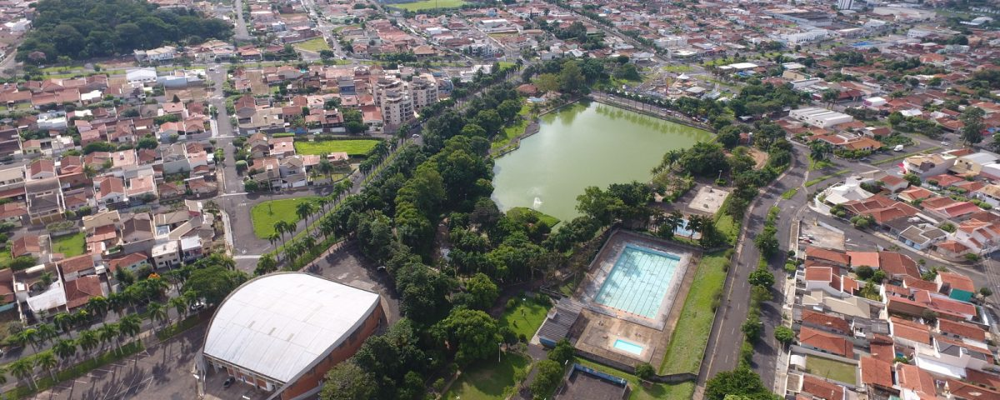
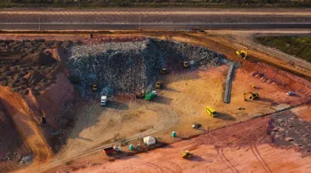

Início
Sobre
Rotas
Login

Tudo sobre:
Reciclagem
23/11/2024 às 15:00, fonte CNN
Garrafas plásticas são transformadas em fonte de energia verde nos EUA

03/09/2024 às 21:38, fonte CNN
Brasil pode desperdiçar R$ 130 bi em 2050 com má gestão de resíduos, diz estudo
QUEM SOMOS
Saiba mais